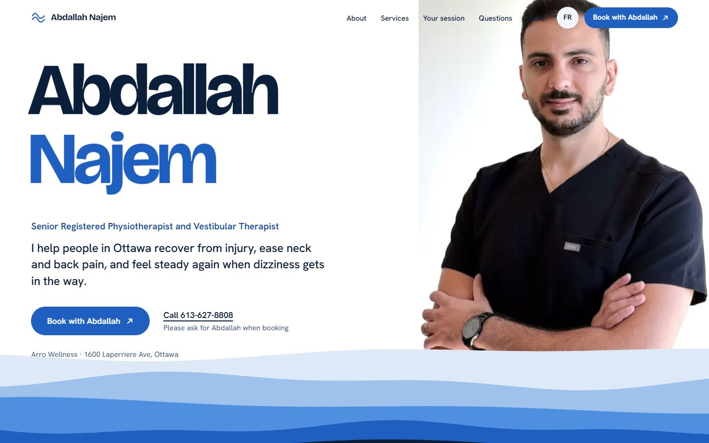
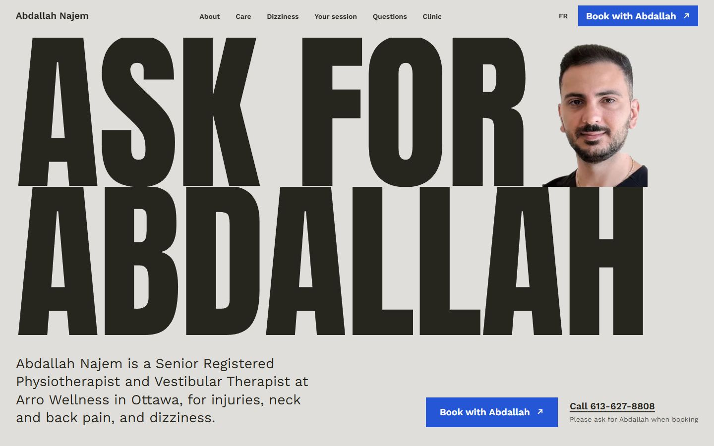
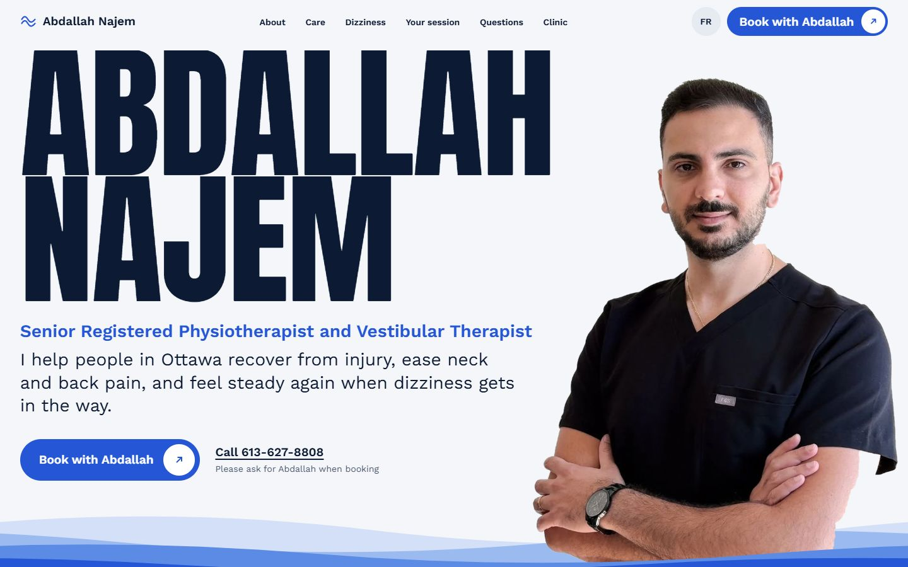
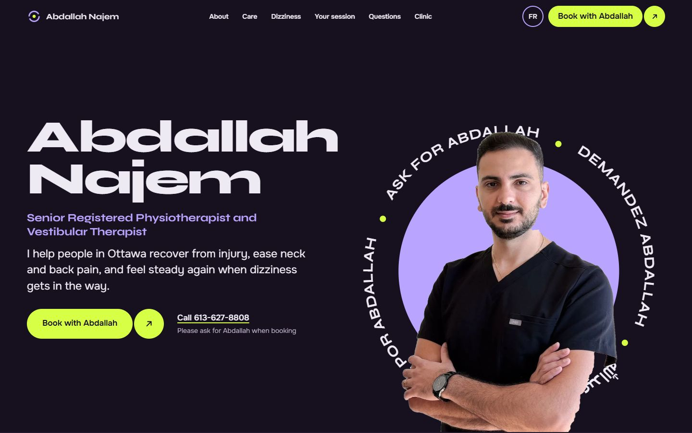
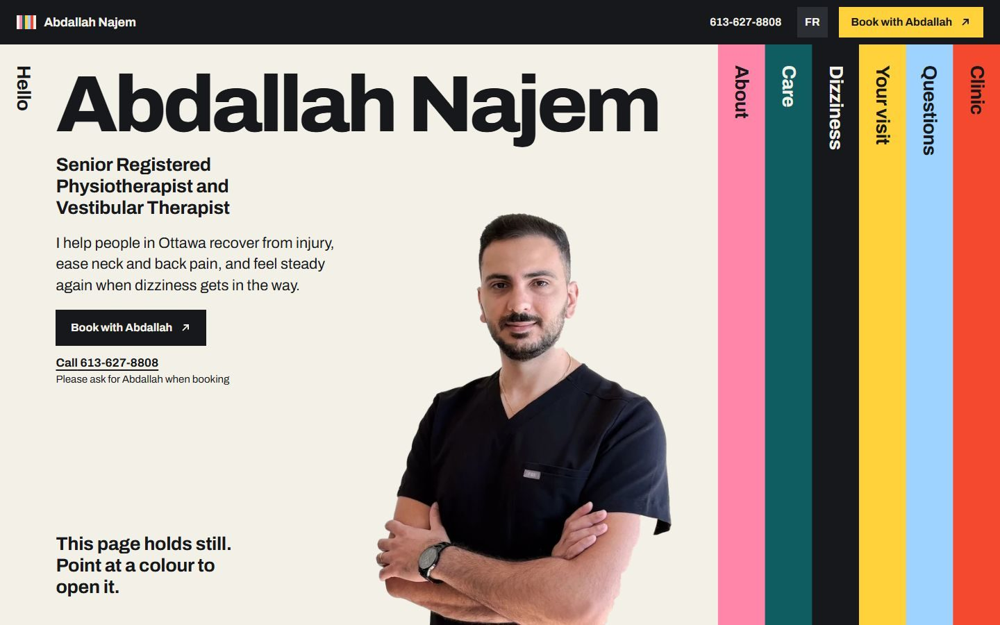

-

Version 1Waves White and blue, with waves under the first screen. His name and portrait open the page, and the services scroll sideways. Open version 1 -

Version 2Poster “Ask for Abdallah” as a giant headline on stone grey, with the portrait opening out of it. Open version 2 -

Version 3Blend The warm opening and brand blue of version 1, redrawn, with the lower half of version 2. Open version 3 -
 Version 4Sideways
The whole site moves from left to right, in cream, forest green and tangerine with a serif typeface. A button switches it to an ordinary vertical page.
Open version 4
Version 4Sideways
The whole site moves from left to right, in cream, forest green and tangerine with a serif typeface. A button switches it to an ordinary vertical page.
Open version 4
-

Version 5Rings Deep violet with lilac and lime. Rings of type turn around the portrait, and the service cards stack as you scroll. Open version 5 -

Version 6Still, the newest Nothing scrolls. Seven colour sheets share one screen: point at a colour and it slides open, point at a word and its details appear. Open version 6